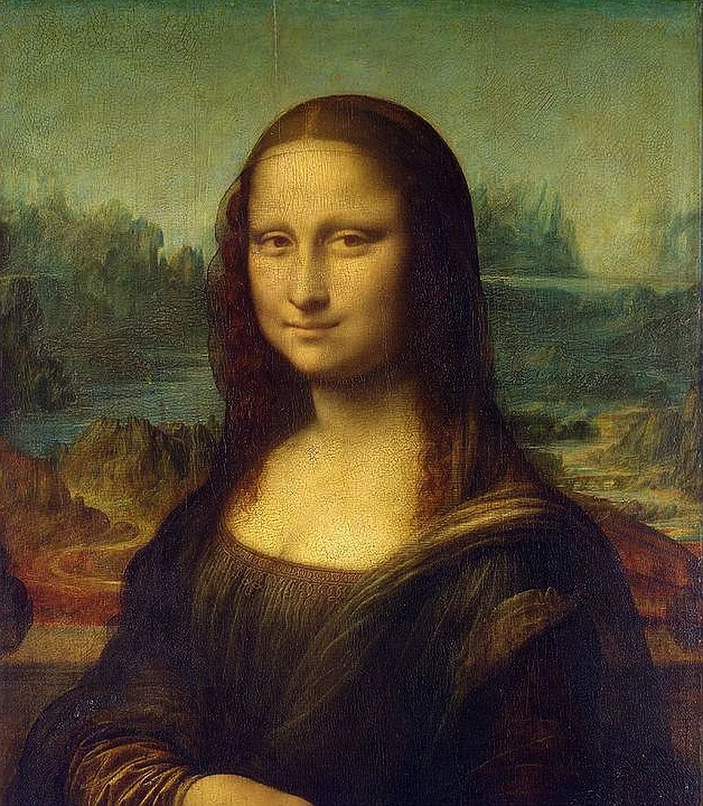
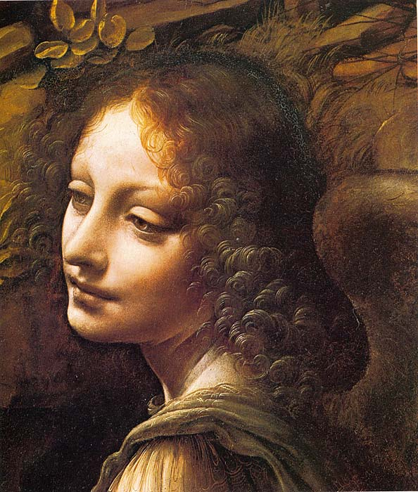

. Говорят даже, что он мог одновременно писать разные тексты разными руками. Однако большинство трудов он написал левой рукой справа налево. Многие думают, что таким образом он хотел сделать тайными свои исследования. Возможно, так оно и есть. По другой версии, зеркальный почерк был его индивидуальной особенностью (есть даже сведения, что ему было проще писать так, чем нормальным образом); существует даже понятие «почерка Леонардо».

В течение своей жизни Леонардо да Винчи сделал тысячи заметок и рисунков, посвящённых анатомии, однако не публиковал свои работы. Делая вскрытие тел людей и животных, он точно передавал строение скелета и внутренних органов, включая мелкие детали. По мнению профессора клинической анатомии Питера Абрамса, научная работа да Винчи обогнала своё время на 300 лет и во многом превосходила знаменитую «Анатомию Грея»

Примером ему послужила природа: «посмотри на каменного стрижа, который сел на землю и не может взлететь из-за своих коротких ног; а когда он в полёте, вытащи лестницу, как показано на втором изображении сверху… так надо взлетать с плоскости; эти лестницы служат ногами…». Что касается приземления, он писал: «Эти крючки (вогнутые клинья), которые прикреплены к основанию лестниц, служат тем же целям, что и кончики пальцев ног человека, который на них прыгает, и всё его тело не сотрясается при этом, как если бы он прыгал на каблуках».
